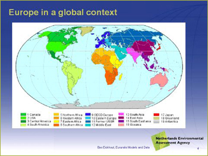

The IMAGE model (Integrated Model to Assess the Global Environment) assesses effects of global change on the environment. Spatial resolution is mostly on national level. In order to simultaneaously estimate the effects of land use change and climate change on yield levels and calculate a set of global environmental indicators, use is made of the integrated assessment model IMAGE (Integrated Model to Assess the Global Environment.The calculations of IMAGE start with the exogenous driving forces of population and economic growth and with the results of the global economic model, including sectoral production growth rates and changes in yield, partly on basis of endogenously determined intensification/extensification processes. |
 |
The IMAGE model allocates the agricultural production on a global grid with a 0.5 by 0.5 degrees resolution to account for heterogeneity of land resources based on a simple allocation mechanism that basically allocates land expansion to areas with the highest potential yield and close to existing agricultural land and land abandonment on the least productive areas. The allocation mechanism of agricultural land also accounts for the distribution of population, the vicinity to water and a random factor. To account for climate change, the emissions of the energy sector need to be considered. Emissions from the energy sector are taken from Bollen et al. (2004), in which the same driving forces and scenario assumptions are used for future projections of the energy sector. The atmospheric and ocean models connected to IMAGE calculate changes in atmospheric composition by employing the emissions and by taking oceanic CO2 uptake and atmospheric chemistry into consideration. Subsequently, changes in climatic properties are computed by resolving oceanic heat transport and the changes in radiation forcing by greenhouse gases and aerosols. The impact models involve specific models for sea-level rise and land degradation risk and make use of specific features of the ecosystem and crop models to depict impacts on vegetation and crop growth. The climate and CO2 feedbacks are simulated dynamically, and together with the impact on yields due to land use change, they provide a modified crop yield for each country or world region considered in the GTAP model. A similar procedure is followed for feed conversion factors for the livestock sector. Table 2 provides an example of the changes in yield resulting from climate change and changes in land allocation. These changes are small when compared to the calculated yield increase by technology. However, a 2% difference may directly translate in land abandonment on 2% of the agricultural area, which is a considerable area at the scale of Europe. Expansion of agriculture has a negative impact on average yield levels in most developing countries due to expansion of cropland in marginal areas while land abandonment on marginal areas in Europe leads to increases in average yield levels.
These modifications to the yield will affect production levels. Therefore, they are fed back to the GTAP model, which simulates new production results based on the adapted yields. The simulations of both models are continued iteratively until the output of the global economy and integrated assessment model with respect to agricultural land area change are consistent (Figure 2). This way the economical and environmental processes leading to changes in agricultural area are modeled consistently and, at the same time, some global level environmental indicators can be calculated.